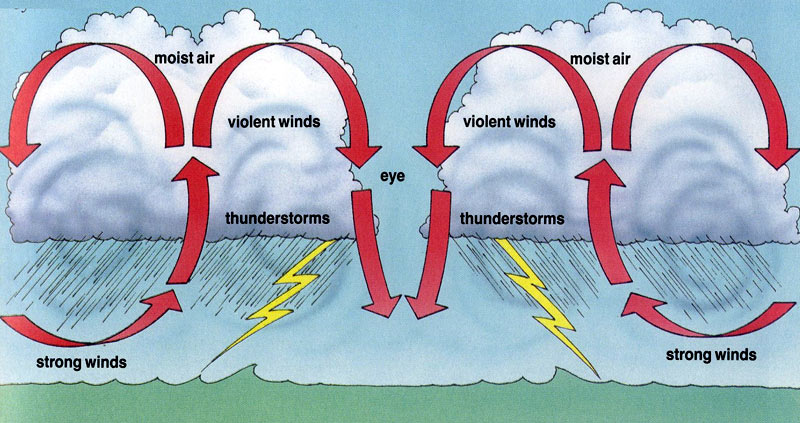
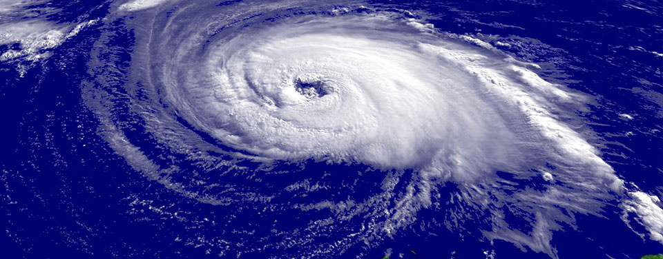
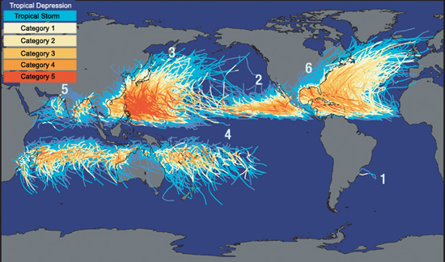
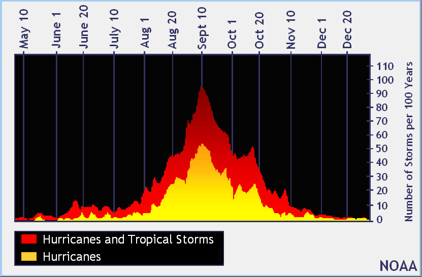
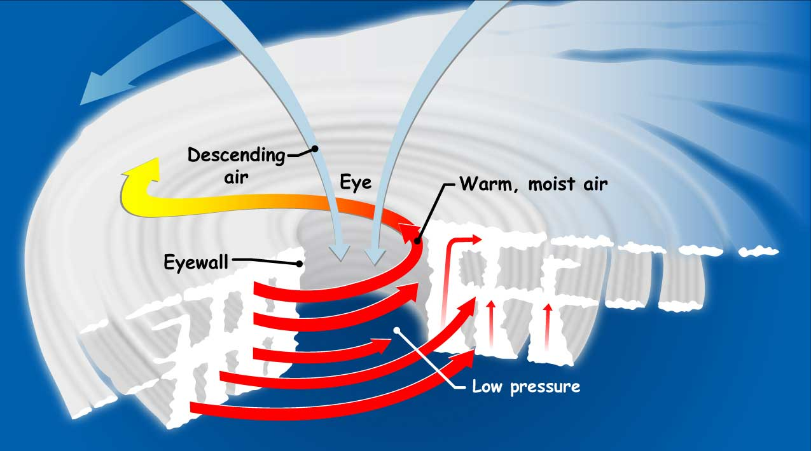

A hurricane is a storm with a violent wind, in particular a tropical cyclone in the Caribbean.A tropical cyclone is a rapidly rotating storm system characterized by a low-pressure center, a closed low-level atmospheric circulation, strong winds, and a spiral arrangement of thunderstorms that produce heavy rain.
Hurricanes are large, swirling storms. They produce winds of 119 kilometers per hour (74 mph) or higher. That's faster than a cheetah, the fastest animal on land. Winds from a hurricane can damage buildings and trees. Hurricanes form over warm ocean waters. The cyclone is accompanied by thunderstorms and, in the Northern Hemisphere, a counterclockwise circulation of winds near the earth's surface.
 Hurricanes are by far most common in the Pacific Ocean, with the western Pacific being most active. In some years, the Philippines are struck by more than 20 tropical storms and typhoons. The term applied to various storms depends on their location.The Atlantic Coast, the Gulf of Mexico, and the Hawaiian islands are the most vulnerable to hurricanes. The top 10 most hurricane-prone cities in the U.S. are the following: Cape Hattaras, North Carolina. Delray Beach, Florida.
urricanes happen when the oceans have been warmed during summer months. In the North Atlantic, hurricane season is from June 1 to November 30, but most hurricanes happen during the fall. As a hurricane's winds spiral around and around the storm, they push water into a mound at the storm's center.The Western Pacific basin's hurricane season is mostly from July 1 to November 30, peaking in late August or early September, though storms can occur year-round.The South Pacific basin's hurricane season is from October 15 to May 15, reaching a peak in late February or early March.The Eastern Pacific basin's hurricane season is from May 15th to November 30th, peaking in late August or early SeptemberThe Indian basin's hurricane season is from April 1 to December 31 for the northern Indian Ocean, and from October 15 to May 31 in the southern region.
Hurricanes are huge storms! They can be up to 600 miles across and have strong winds spiraling inward and upward at speeds of 75 to 200 mph. Each hurricane lasts for over a week, moving 10-20 miles per hour over the open ocean.The scientific term for all these storms is tropical cyclone. Only tropical cyclones that form over the Atlantic Ocean or eastern Pacific Ocean are called "hurricanes".Tropical cyclones are like giant engines that use warm, moist air as fuel. That is why they form only over warm ocean waters near the equator.Hurricanes only form over really warm ocean water of 80°F or warmer. The atmosphere (the air) must cool off very quickly the higher you go. Also, the wind must be blowing in the same direction and at the same speed to force air upward from the ocean surface.
